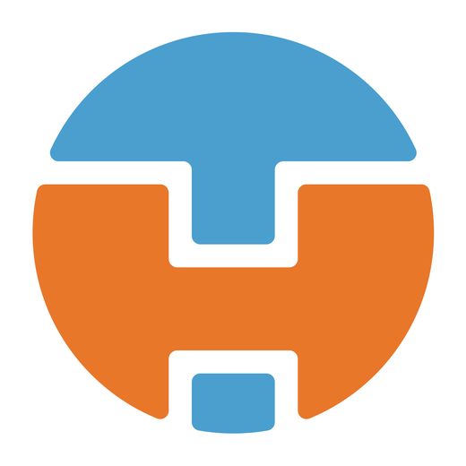

Brand Strategist | Creative Leader | Certified Scrum Master
Twenty-five years of riding new technology.
I’m Tim Howes. For 25 years I’ve led creative teams through each new wave of technology, from the first websites to immersive learning and AI. Here’s the story, one wave at a time.

The story
Every few years, a new wave rolls in.
I grew up a beach kid in California, and I still read technology the way a surfer reads the water: watch the swell, pick the wave, commit. Interactive media, the web, mobile, real-time 3D, XR and now generative AI. Each time, the job is the same: make the new thing useful, on brand, and something a real team can ship.
-
2005Wave 1 · Web
Websites that do real work
At Media Box Studios and then The Scylla Group, I designed and directed interactive media and websites for brands like Rubbermaid and Britax, built to sell, not only to look good.
Rubbermaid Commercial Products: +55% pageviews and an Umbraco Award.

Rubbermaid Commercial Products
+55% pageviews · Umbraco Award
-
2011Wave 2 · Mobile and product
Tools people use every day
When shoppers moved to their phones, the work moved with them. Britax relaunched for an audience that was more than 65% mobile, and the planning tools I designed were built around what people were trying to get done.
Rubbermaid Closet Planner: 20% cart conversion and a Horizon Award.

Rubbermaid Closet Planner
20% cart conversion · Horizon Award
-
2019Wave 3 · Agile teams
Teams that ship
As the products grew, the hard part became the team. I became a Certified Scrum Master, coached companies in Hungary and Romania through the switch to Agile, then joined Oracle as a Scrum Master.
How I lead →3 monthsto unite two distributed Oracle teams across India, Europe, the US and Mexico50–100people per Agile training I designed and led at Oracle5–7people on the cross-functional creative teams I lead10+ yrspracticing and teaching Agile -
2022Wave 4 · Immersive
From the policy table to the headset
It started at the policy table, facilitating a Virginia brain trust of 74 industry leaders. A two-year, $2M assessment of immersive training for DHS followed. That led to AccessVR and OrchestrateXR and, at Apple’s invitation, Ruscella Immersive, which I co-founded and lead as Chief Creative Officer.
- Virginia brain trust
- DHS assessment
- AccessVR + OrchestrateXR
- Ruscella Immersive

Christopher Newport University
Plan to launch in 6 months
-
NowWave 5 · Generative AI
Concepts in days, not months
AI is now part of how I design, build and test. Scrum 101 went from concept to a working app in one day. The water at the bottom of your screen was built the same way. Play with it, then open the Water Lab and make it your own.
See Scrum 101 →
Water Lab
Concept to live site in one day
Work together
Two ways in.
Hire me
I’m open to creative leadership roles across brand, UX and immersive technology. I lead small teams that ship, remote from Hungary on US hours.
Work with me
Through Ruscella Immersive, I help universities, companies and government agencies adopt immersive technology: learning labs, immersive experiences, brand and fast prototypes.